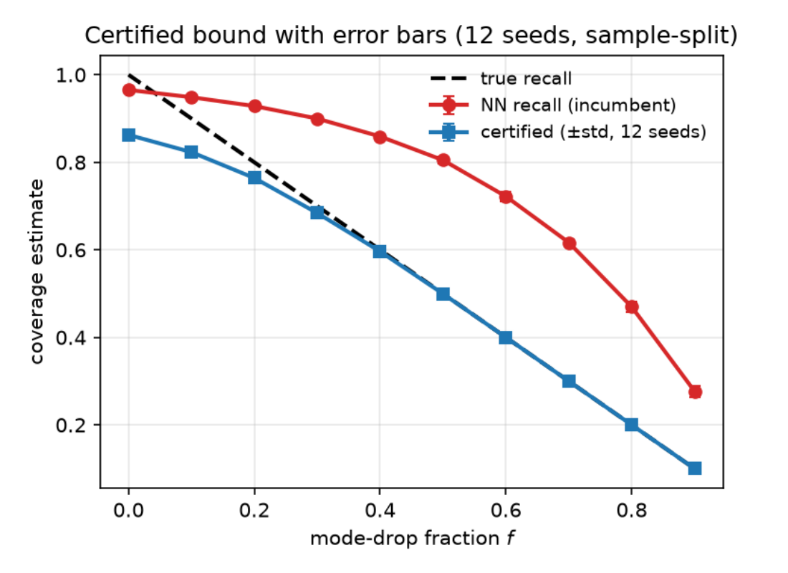

Certifying what your
generative model covers
Labeller-conditional, finite-sample mode-recall guarantees
1 Georgia Institute of Technology 2 RIKEN
How can we assess mode coverage when the classifier itself makes mistakes? I developed a finite-sample framework that certifies whether each mode meets a frequency threshold, falls below it, or remains inconclusive.
Guarantees require the labeller’s error bounds to hold on generated data.
May 2026 — Present
